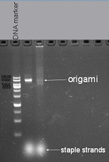

To explore the best reaction condition, we designed a series of gradient experiment of Mg2+ concentration and reaction time. At first, we change the Mg2+ concentration from 15mM to 6mM when we set the reaction time for 2.5 hours. Fig1.1 shows the result of trial. From this trail we can find that the best Mg2+ concentration is 8mM. Then we need to make sure the time of origami reaction. Besides, we also wonder if 8mM is still the best concentration for origami when reaction time changes. And the result was shown in Fig 1.2.
Fig1.1 1% agarose gel electrophoresis of samples from reaction with different Mg2+ concentration.
Fig1.2 1% agarose gel electrophoresis Gradient of Mg2+ and time. Three lanes on the left was samples from reaction spending 2.5 hours, while three lanes on the right was samples from reaction spending 5 hours. The last one on the right is a control reaction reagents (Mg2+ concentration is 8mM) that was place at 4℃.
Finally we were sure that the best concentration of Mg2+ of the assembling reaction is 8mM and 2.5 hours reaction time is better for origami reaction, the optimization result was demonstrated in Fig1.3.
Fig1.3 1% agarose gel electrophoresis Mg2+ concentration is 8mM and reaction time is 2.5 hours
Figure 2.1: hydrodynamic size of gold seed (Average size: 27.35nm )
We adopted seed growth strategy to synthesize 30nm gold nanoparticle . So we synthesize 10nm nano-gold seed firstly. Having synthesized the gold seed, we measure the hydrodynamic sphere size with laser particle analyzer. Figure 2.1 shows the hydrodynamic size of gold seed is 27.18 nm in diameter. According the previous data of our laboratory, the diameter of gold seed is about 10nm.
Figure 2.2: hydrodynamic size of unmarried Au NP
Figure 2.3: zeta potential of unmodified Au NP
Figure 2.4: TEM image of Au NP (TEM diameter: 30nm)
While incubating with Mercaptosuccinic acid (MSA) and HAuCl4, seeds grew up gradually. Finally we got the gold nanoparticle which is about 50nm in hydrate diameter and 30nm diameter under TEM. We also measured the zeta potential.
Figure 2.5: hydrdynamic of modified Au NP
Figure 2.6: zeta potential of modified Au NP
Figure 2.7: TEM image of modified Au NP
In order to link with DNA tube, we modified hundreds of sulfhydryl ssDNA on the surface. After incubating with ssDNA for two days, we measure the hydrate size and zeta potential again. Compared with unmodified Au NP, hydrodynamic size and zeta potential became larger. So we conclude AuNP has conjugated ssDNA. The TEM image shows that Au NP has been totally surrounded by ssDNA.
Figure 3.1: Hydrate size of unmodified MP
Figure 3.2: Hydrate size of modified MP
Figure3.3: TEM image of modified MP (accelerating voltage: 75KV Magnification 10000 X)
Before modification and after linked with F-BAS system, we measured the zeta potential and hydrodynamic size of magnetic nanoparticles. The result shows that the hydrodynamic size become larger after modification, which suggests the magnetic nanoparticles has linked with F-BAS.
Figure 4.1: TEM image of Nano-robot (accelerating voltage: 75KV Magnification 10000 X)
We finally find our target structure under TEM. It is similar to our originally designed Nano-robot. The length is about 400nm. We also realized that the AuNP was surrounded by magnetic nanoparticles. As magnetic nanoparticles is tend to aggregate, it’s understandable to find our nano-robot with excess magnetic nanoparticles aggregated.
After assembling of nanotube to magnetic nanoparticles and gold nanoparticles, we still need to verify that our Nano-ship can move under the control of magnetic fields. Then we can tell that our Nano-ship can be used for targeted therapy. We plan to view result under Confocal Laser Scanning Microscope (CLSM) for our Nano-ship can fluoresce. Just like Fig5.1 and these video:
http://www.rsc.org/suppdata/jm/c0/c0jm04014b/figs1.avi http://www.rsc.org/suppdata/jm/c0/c0jm04014b/figs2.avi http://www.rsc.org/suppdata/jm/c0/c0jm04014b/figs3.avi http://www.rsc.org/suppdata/jm/c0/c0jm04014b/figs4.aviFig 5.1 A demonstration of our Nano-ship swinging and advancing under the control of magnetic fields
In our project, we linked aptamer[2] to the head of Nano-ship so that it can recognize cancer cells within a cell mass. (Fig 5.2). To reach this goal, we need to mark the cancer cells and normal cells in different fluorescence. Then we can test by viewing the fluorescence.
Fig5.2 Nano-ship can recognize cancer cells within a mass of cells.